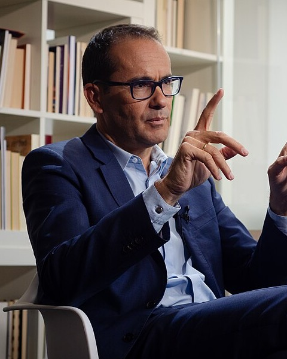

Ficha de personaje · Autor
David Jiménez
Periodista y escritor, nacido en Barcelona en 1971. Fue corresponsal de El Mundo en Asia durante casi dos décadas y dirigió el periódico entre abril de 2015 y mayo de 2016. Es el autor del libro y el protagonista de la película, donde lo interpreta David Verdaguer.
Confirmado


- En el libro
- Narrador en primera persona
- En la película
- David Jiménez
- Actor
- David Verdaguer
- Director de El Mundo
- 30 de abril de 2015 – 25 de mayo de 2016
Trayectoria
Entró en El Mundo en los años noventa y en 1998 abrió la primera delegación del periódico en Asia, en Hong Kong. Cubrió conflictos en Timor Oriental, Cachemira, Afganistán, Birmania y Nepal, entró dos veces en Corea del Norte y se quedó en Fukushima tras el accidente nuclear. Fue Nieman Fellow en la Universidad de Harvard y columnista de The New York Times.
Sustituyó a Casimiro García-Abadillo al frente del periódico y fue despedido algo más de un año después; le sucedió Pedro García Cuartango. Demandó a la empresa y el despido se reconoció como improcedente.
Libros
- Hijos del monzón (2007)
- El botones de Kabul (novela)
- El lugar más feliz del mundo (2013)
- El director (2019)
- El corresponsal (2022, novela)
- Los diarios del opio (2023)
- Días salvajes (2024)
Hoy
Mantiene un canal de YouTube con su nombre, dedicado a la actualidad política y mediática. Allí presentó el tráiler de la película días antes del estreno.